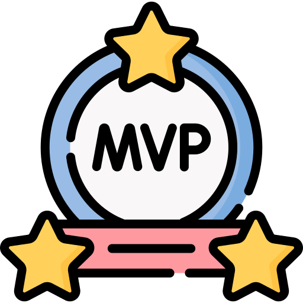
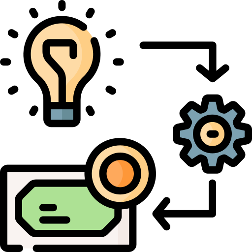
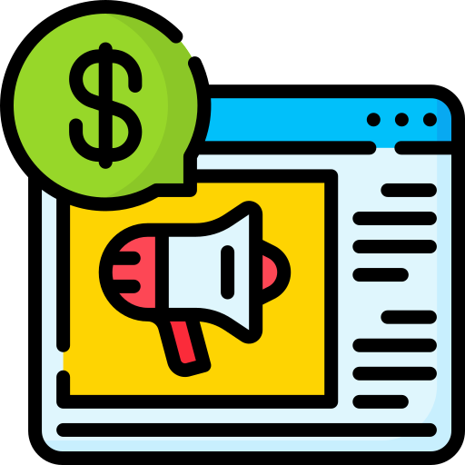

Hey, it's great to see you here!
I'm a tech enthusiast who turned years of independent learning and consulting into a career in software development.
A few years ago, I set out to become a full-stack developer, but I soon realized that it's impossible to excel at everything. Still, my curiosity about every kind of technology gives me the ability to put together an MVP from scratch.
If I had to pick one area that still excites me today, it would definitely be building backends that do the heavy lifting behind the scenes. I love designing lightweight, powerful systems that are distributed, synchronized, elegant, and effective…
I also have a YouTube channel where I share my experience with others, covering software development, system design, databases, servers, optimization, and technology in general from a developer's perspective.
Like other developers of my generation, I took my first steps on a Commodore, naturally a secondhand or even thirdhand one. Those were the days when writing a single line of BASIC made you feel like a god, able to bend machines to your will. Of course, becoming a programmer is an uphill journey. Technology has evolved exponentially: I went through Windows 3.1, 95, and 98, discovered Linux and the wonderful XP, then moved on to Mac, iOS, Android, and who knows what else the future will bring. But one thing has always remained the same: wanting to understand how things work and how to reprogram them…
In April 2009, driven by the desire to build a career in IT, I started working as a freelance developer. My work mainly involved building websites and office automation applications, providing IT consulting and training, and offering technical support for hardware and software.
In 2010, I co-founded Gruppo MIPS with two other people, a cooperative providing IT and communications services. I managed its IT division as well as its administration. We handled branding for various professionals, ran communications campaigns for small and medium-sized businesses, built websites for schools and local authorities, and worked on several regional projects.
In July 2013, I had the opportunity to join the IT team at one of the world's leading stainless steel manufacturers. The company's international presence and numerous subsidiaries around the world gave me the chance to develop many digitalization projects, also driven by new regulations and investments in improving efficiency in an industry with over a century of history.
In 2025, while continuing to work full-time in IT at the multinational company mentioned above, I decided to reactivate my VAT registration. This time, the main reason was to handle the tax obligations associated with monetizing my online work as a content creator. This allows me to collaborate with brands, run masterclasses, and take on occasional freelance projects as time permits…
In March 2022, I decided to launch a YouTube channel dedicated to developers. I started sharing my story, my passion, and my experiences in technology to help aspiring developers find an effective path into the profession.
In January 2019, I needed a simple wiki with Markdown support that was easy to install and use. When I couldn't find anything that fit my needs, I created Wiki|Docs. I made it available as open source on GitHub from the start. After a few years, interest began to grow, and a community is now forming around the project. Encouraged by that interest, I decided to give the project a fresh start by rewriting it with a more structured approach. I'm looking for new contributors, so if you're interested, head over to the repository!

Build a Minimum Viable Product

Project and architecture consulting
Courses, training, or mentorship

Promote your brand or product
Build a Minimum Viable Product
A Minimum Viable Product is the simplest working version of a product or service. Think of a prototype that lets you test an idea in the market as quickly as possible. Building an MVP means focusing on the essential features that solve a specific problem for your users, without slowing development down with unnecessary functionality. This approach lets you gather valuable feedback, validate your idea, and refine your product based on your audience's needs.
Project and architecture consulting
Designing robust, scalable software architectures tailored to your specific business needs is essential. Working closely with you, I'll analyze your requirements, evaluate the most suitable technologies, and design a software architecture that maximizes your product's efficiency, security, and maintainability. Drawing on my experience, I'll help you choose the best technology solutions and make strategic decisions for your project's long-term success.
Courses, training, or mentorship
I strongly believe in continually developing your skills. I offer personalized training courses to help you achieve your professional goals. Through theoretical and practical lessons, I'll help you build new skills and give you the tools you need to tackle challenges in your field. Investing in yourself is the key to success. Through mentoring, we'll work together to define your goals and create a learning path tailored to you.
Promote your brand or product
Looking for a partner to grow your social media presence, or want to use my channels to promote your product or service? Let's work together to create authentic, engaging content that connects with both your audience and mine. Together, we'll find the best ways to achieve your goals and get people talking about you. I only work with brands that I believe are a good fit for my audience.
If you'd like to contact me, here's how: